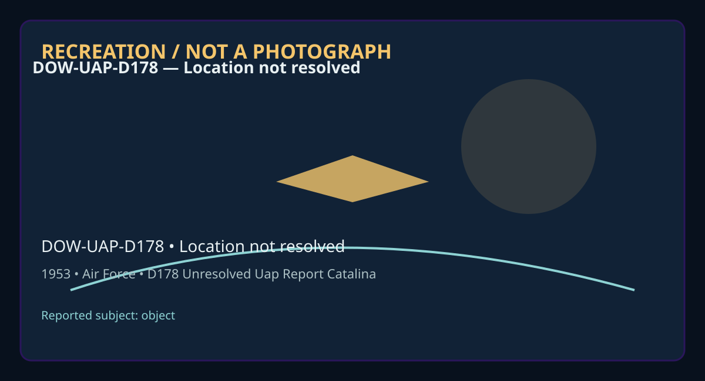

Release 07 / archival case file / DOW-UAP-D178
D178 Unresolved Uap Report Catalina Island 1953
This d178 unresolved uap report catalina places a object thread in a 1953 Location not resolved record.
ID: DOW-UAP-D178
Filename:
DOW-UAP-D178_Unresolved_UAP_Report_Catalina_Island-1953.pdfDate marker: 1953
Location: Location not resolved
Agency or collection signal: Air Force
Pages read: 5

RECREATION / NOT A PHOTOGRAPH. The diagram is an interpretive editorial aid, not source imagery.
What this document says
The opening page's extracted text begins: “1. DA TE • TIME GROUP 2, LOCATION 16 ..0, ~ l' .,1 16/1..,,v Z Catili l. SOURCE 10. CONCLUSION ) 4. NUMBER OF OBJECTS >VeJ ent of Object docs no~ co'ncide with w.i.n:ls aloft. er _ r t:.on s possibl~ S. L ENGTH OF OBSUVATIOM 1"1:'° 1i11E, ♦SUMMARV A AMALYSlf J ~ 6, TY PE OF OBSERVATION 7, COURSE 8. PHOTOS O Yu D No l.lnJ. - • = l 9, PHYS ICAL EVIDENCE o Yu KNo FORM •..01.u..... • "'--. ~ .i 1 • .i" ob.. ct ~jd1tin.., <N r C..t,~J • :cl level horizontal l 'ourc r to be .-· Wll"N t d tt t clear. c ..,. rs I re o1: 5 hrs, 3€ ln. , ,5 de.., lev tion j~ Authonty NND 923007 FTD SEP 63 0-329 (TOE) .....1... •41£11... ., tM, , __,, ~ ...... st..,t·on~:rr. in i'.:i.1 t Los A.~ el- s on a • • e s' .:.es , re ·ov 15, Ju. •tel”
Across the 5 pages, the recurring terms are object. Those details belong to this file, not to a generic case template. Page-level reading follows:
- Page 1: 1. DA TE • TIME GROUP 2, LOCATION 16 ..0, ~ l' .,1 16/1..,,v Z Catili l. SOURCE 10. CONCLUSION ) 4. NUMBER OF OBJECTS >VeJ ent of Object docs no~ co'ncide with w.i.n:ls aloft. er _ r t:.on s possibl~ S. L ENGTH OF OBSUVATIOM 1"1:'° 1i11E, ♦SUMMARV A AMALYSlf J ~ 6, TY PE OF OBSERVATION 7, COURSE 8. PHOTOS O Yu D No l.lnJ. - • = l 9, PHYS ICAL EVIDENCE o Yu K
- Page 2:
- Page 3: --- • • ' • . I (\ ,) . ,, ,,~ ·; (c; • b \.,l f / '" \~~ ~ {~ \;' )VJJJi~ • - I -, (;~ cJ I;~[' \ 'j ~ii J • RJ\084 I~ \ J};~ ~ 0(5'_ WPG0~9 V • q0/ ' YDCl75 ✓,> • XYB233 O,> , ·s JWZ C267 ~ • .•co.ss1F[ED" BX71 BWD A2SI MIDK292 • RR JEDEN JEDWP JEPHQ JEPQW 444 DE BWDKW 0 ~ ,,,. R 171~392 --- - -It-1---HQ- COM»R- 2Jli 7TH---A-J.'.R.r~-8EACH MUNI APRT CALI
- Page 4: • • • • .J PAGE TWOXBJW 19 CI> OBJECT APPERED TO BE STATIONERY IN FIRST SIGHTING . OVER CATALINA AND MOVED NORTH-WEST TOWARD LOS ANGELES WHERE IT DISAPPERED FROM VIEW C2) CA) CASUAL GLANCE AT SKY CB) 45 DEGREES ANGLE OF ELEVATION,; ODEGREES AZIMUTH CC) 4S DEGREE ANGLE Of ELEVATION AZIMUTH UNKNOWN • CD> OBJECT FLIGHT PATH APPERED TO BE STRAIGHT AND LEVEL • (i
- Page 5: . . . ' ,,; • .. • ~ • PAGE THREE BWDKW IS KB> T/SGT ROBERT J CURRIE 39 POSTOFFICE BOX 294 SAN PERDO 7WJ HARBOR • HILL LOMIPA CALIF AIR FORCE CLERK UNKNOWN (7) • (A) CLEAR CB) NW AT 8K 25'1 AT UK, 270 AT 14K1 2~ AT 12K1 261 AT 28K1 2(.0 AT !f0 K UNKNOWN • CC) CLEAR . CD) TEN <U > MILES )r • CE> NONE • (F) N/A • (~STRONOMERS AT GRIFF-US ~ARK OBSERV~TORY AVER
Historical context and disclosure schema
Read in context, this record belongs to the 1953 information environment: Air Force paperwork, a Location not resolved setting, and the reporting conventions visible in the source. Its broader disclosure value is procedural as well as anecdotal: it shows how an observation, material question, investigation, or analytical program was routed, described, and preserved. That makes it comparable to other Release 07 records without collapsing unlike evidence into one event.
Evidence limits
The source establishes that this document exists and records what its authors or quoted witnesses wrote. It does not, by itself, prove the identity, performance, origin, or physical reality of the reported subject. Extraction preserves wording but cannot restore missing attachments, authenticate provenance, or independently validate testimony. Interpretations beyond the page-specific record remain hypotheses.
Source: supplied PDF in research/tranche-07. This article is a research aid, not a claim that the reported object was non-human.